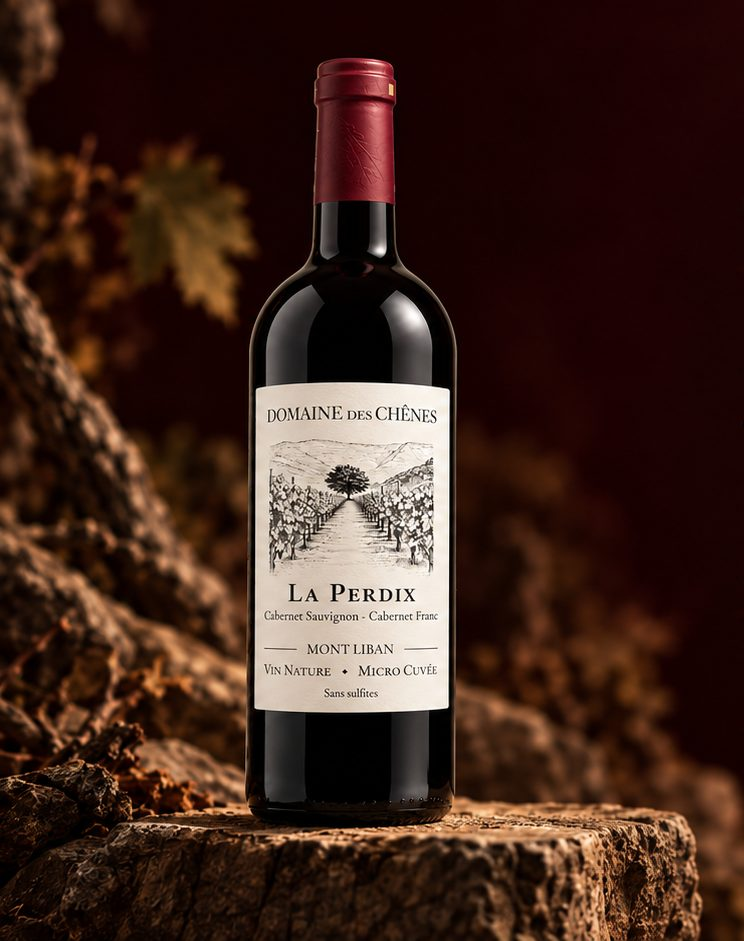

Domaine des Chênes
La Perdix
Cabernet Sauvignon · Cabernet Franc
Structuré · Minéral · Élégant · Profond
Un rouge de vieilles vignes, profond et réservé, où le cassis, la mûre et la cerise noire se mêlent à la violette, au graphite, au cèdre et aux herbes sauvages. Il ne se livre jamais tout de suite : sa structure tannique s'assouplit lentement, révélant au fil des heures une minéralité pierreuse, quelques notes de tabac et de terre, puis une finale droite, profonde et persistante.